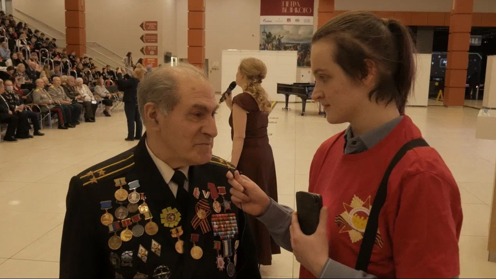
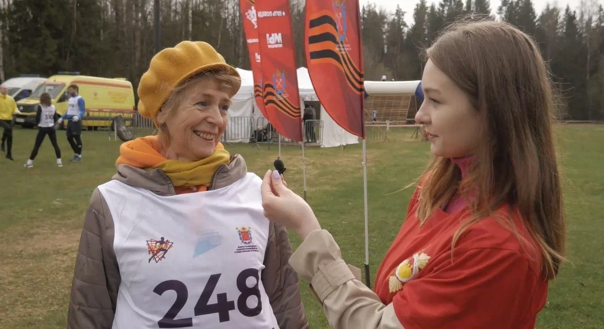

САНКТ-ПЕТЕРБУРГСКАЯ ОБЩЕСТВЕННАЯ ОРГАНИЗАЦИЯ ВЕТЕРАНОВ (ПЕНСИОНЕРОВ, ИНВАЛИДОВ) ВОЙНЫ, ТРУДА, ВООРУЖЕННЫХ СИЛ И ПРАВООХРАНИТЕЛЬНЫХ ОРГАНОВ
Современной молодежи нужна достоверная научная история Великой Отечественной войны, которая помогала бы сделать обоснованные выводы из прошлого и помочь решать сложнейшие проблемы сегодняшнего дня. Подлинная научная история ВОВ призвана содействовать воспитанию подрастающего поколения в духе патриотизма, расширению сотрудничества и взаимопонимания между странами и народами. Без знания полной исторической правды, без осмысления и усвоения уроков минувшего невозможен успех преобразований в нашей стране.
Проект «Школа патриотического воспитания на боевых и трудовых традициях старшего поколения» реализуется в Санкт-Петербурге с 2022 года. Это работа по созданию и продвижению патриотического контента. Проект направлен на развитие и укрепление связи поколений, сохранение исторического наследия, воспитание уважения к трудовым достижениям и победам страны, создание информационной среды, с использованием современных средств электронной коммуникации и традиционных СМИ, для распространения информации о деятельности ветеранских и молодежных организаций Санкт-Петербурга. Целевая группа проекта – молодежь Санкт-Петербурга в возрасте от 14 до 35 лет.
Новым направлением проекта в 2024 году стало изучение истории одного из ключевых моментов Великой Отечественной войны - битвы за Ленинград, которая завершилась 80 лет назад, в августе 1944 года. С этой целью была разработана и выпущена информационная брошюра для проведения тематических уроков «Правда и вымысел о значении обороны и разгроме фашистов под Ленинградом в годы Великой Отечественной войны 1941-1945 гг.». Многолетний опыт, полученный в ходе проекта и патриотической работы Совета ветеранов с учащимися и студентами отражен в брошюре. Уроки т проходили в учебных заведениях города, а лекторами на них выступили ветераны Вооруженных сил и правоохранительных органов, в том числе заслуженные учителя России и доктора исторических наук.
 Количество благополучателей: 200000 человек.
Количество волонтеров: 30 человек.